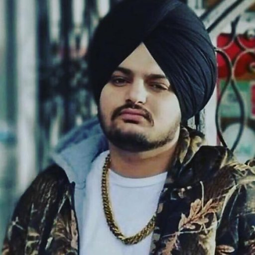

Sidhu Moose Wala
1993 - 2022
Indian Singer-Rapper
Shubhdeep Singh Sidhu (11 June 1993 – 29 May 2022), better known by his stage name Sidhu Moose Wala, was an Indian rapper, singer, songwriter and actor from Punjab. He rose to the mainstream with his track "So High". In 2018, he released his debut album PBX 1, which peaked at number 66 on the Billboard Canadian Albums chart. His single "47" was ranked on the UK Singles Chart. In 2020, Moose Wala was named by The Guardian among 50 up and coming artists. He is generally regarded to have been one of the greatest Punjabi artists of his generation. Moreover, he was considered as a key figure in opening the door for Punjabi artists into mainstream music.
Biographies
- He studied at Guru Nanak Dev Engineering College, Ludhiana and graduated in electrical engineering in 2016.
- Moose Wala released his first song "G Wagon" while living in Brampton.
- He started to perform live shows in India from 2018.
- In Feb. 2019, Moose Wala released "Legend", under his own record label. It won him the Britasia TV Kuflink Best Track of the Year Award in 2019.
- In December 2020, Moose Wala released the single "Panjab: My Motherland" in support of the Indian farmers protest against the 2020 Indian agriculture acts.
- In May 2020, two videos featuring Moose Wala went viral on social media: one showcased him training to use an AK-47 with assistance from police officers.
- On 3 December 2021, Moose Wala joined the Indian National Congress to contest the 2022 Punjab Legislative Assembly election.
- Moose Wala was shot dead by unidentified assailants in his car on 29 May 2022 in Jawaharke village of Mansa district.